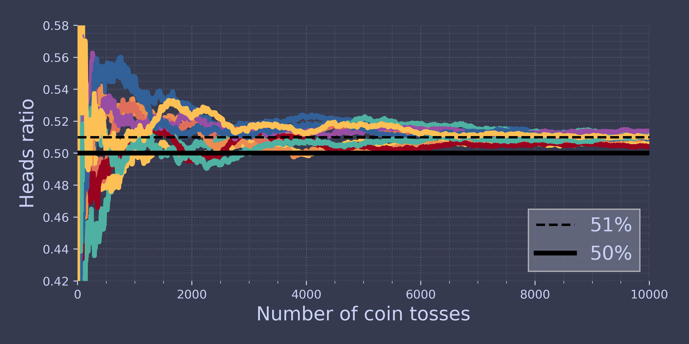
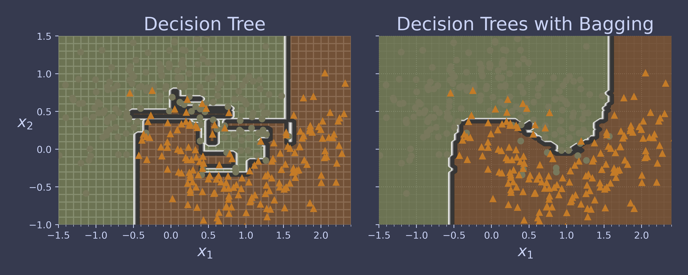
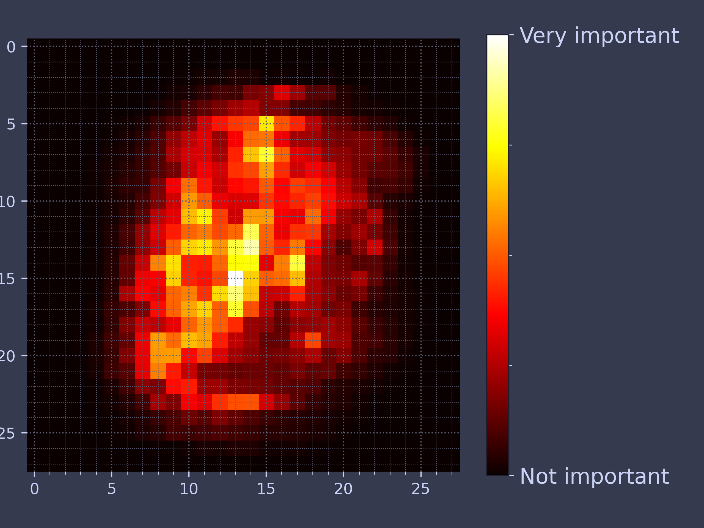
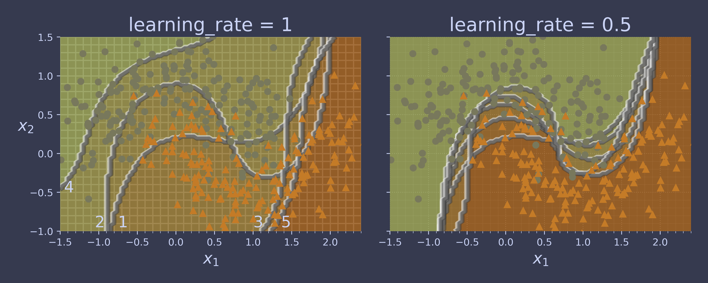
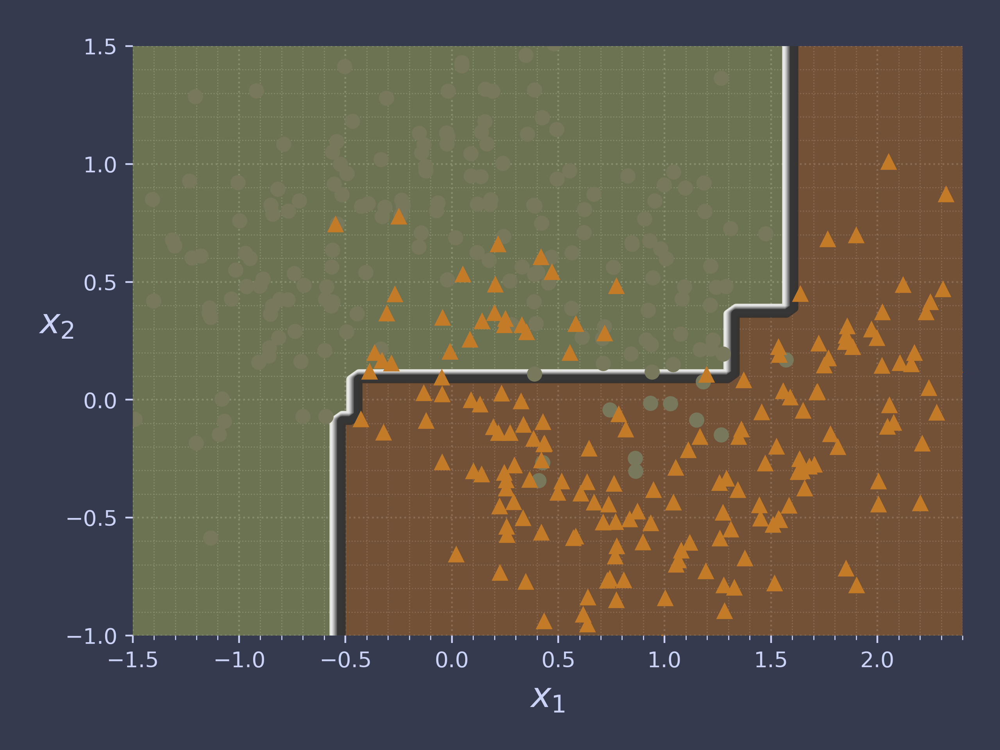
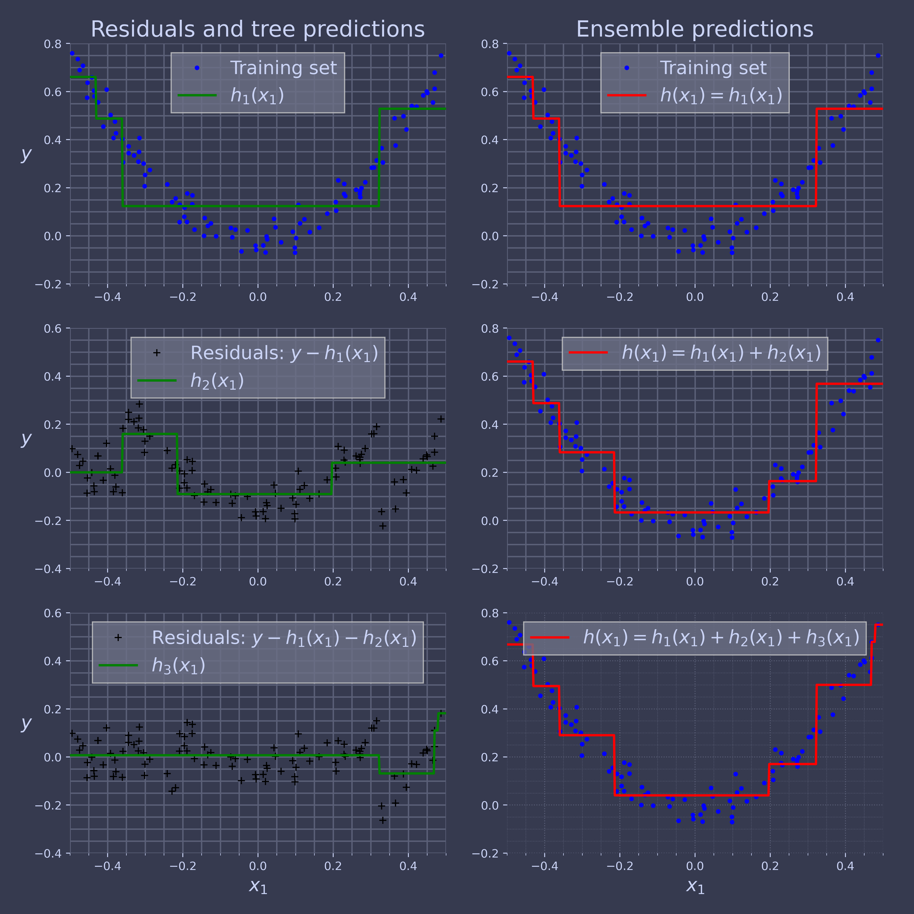
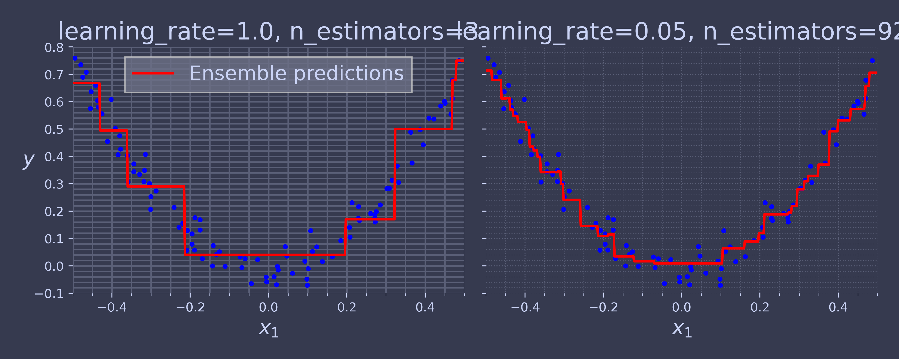

Code for Machine Learning and Data Science II Ensemble Learning and Random Forests
Table of Contents
These are the code snippets used in Ensemble Learning and Random Forests
part of Machine Learning and Data Science II.
Introduction
The following is a custom package written to handle plotting and other functions required by the lecture.
import ChalcedonPy as cp # custom-pakcage for lecture materials and publications SAVE_PATH = "Ensemble-Learning-and-Random-Forests" # sets the default save path style="web" # sets the default rcParams stylce sheet
Voting Classifiers
import matplotlib.pyplot as plt import numpy as np heads_proba = 0.51 np.random.seed(42) coin_tosses = (np.random.rand(10000, 10) < heads_proba).astype(np.int32) cumulative_heads = coin_tosses.cumsum(axis=0) cumulative_heads_ratio = cumulative_heads / np.arange(1, 10001).reshape(-1, 1)
plt.figure(figsize=(8, 4)) plt.plot(cumulative_heads_ratio) plt.plot([0, 10000], [0.51, 0.51], "k--", linewidth=2, label="51%") plt.plot([0, 10000], [0.5, 0.5], "k-", label="50%") plt.xlabel("Number of coin tosses") plt.ylabel("Heads ratio") plt.legend(loc="lower right") plt.axis([0, 10000, 0.42, 0.58]) cp.store_fig("law-of-large-numbers-plot", filepath = SAVE_PATH, style = style, close = True)

Time to build a voting classifier
from sklearn.datasets import make_moons from sklearn.ensemble import RandomForestClassifier, VotingClassifier from sklearn.linear_model import LogisticRegression from sklearn.model_selection import train_test_split from sklearn.svm import SVC X, y = make_moons(n_samples=500, noise=0.30, random_state=42) X_train, X_test, y_train, y_test = train_test_split(X, y, random_state=42) voting_clf = VotingClassifier( estimators=[ ('lr', LogisticRegression(random_state=42)), ('rf', RandomForestClassifier(random_state=42)), ('svc', SVC(random_state=42)) ] ) print(voting_clf.fit(X_train, y_train))
VotingClassifier(estimators=[('lr', LogisticRegression(random_state=42)),
('rf', RandomForestClassifier(random_state=42)),
('svc', SVC(random_state=42))])
for name, clf in voting_clf.named_estimators_.items(): print(name, "=", clf.score(X_test, y_test))
lr = 0.864 rf = 0.896 svc = 0.896
voting_clf.predict(X_test[:1])
[clf.predict(X_test[:1]) for clf in voting_clf.estimators_]
voting_clf.score(X_test, y_test)
0.912
Time to use soft voting:
voting_clf.voting = "soft" voting_clf.named_estimators["svc"].probability = True voting_clf.fit(X_train, y_train) voting_clf.score(X_test, y_test)
0.92
Bagging and Pasting
from sklearn.ensemble import BaggingClassifier from sklearn.tree import DecisionTreeClassifier bag_clf = BaggingClassifier(DecisionTreeClassifier(), n_estimators=500, max_samples=100, n_jobs=-1, random_state=42) bag_clf.fit(X_train, y_train)
BaggingClassifier(estimator=DecisionTreeClassifier(), max_samples=100,
n_estimators=500, n_jobs=-1, random_state=42)
def plot_decision_boundary(clf, X, y, alpha=1.0): axes=[-1.5, 2.4, -1, 1.5] x1, x2 = np.meshgrid(np.linspace(axes[0], axes[1], 100), np.linspace(axes[2], axes[3], 100)) X_new = np.c_[x1.ravel(), x2.ravel()] y_pred = clf.predict(X_new).reshape(x1.shape) plt.contourf(x1, x2, y_pred, alpha=0.3 * alpha, cmap='Wistia') plt.contour(x1, x2, y_pred, cmap="Greys", alpha=0.8 * alpha) colors = ["#78785c", "#c47b27"] markers = ("o", "^") for idx in (0, 1): plt.plot(X[:, 0][y == idx], X[:, 1][y == idx], color=colors[idx], marker=markers[idx], linestyle="none") plt.axis(axes) plt.xlabel(r"$x_1$") plt.ylabel(r"$x_2$", rotation=0) tree_clf = DecisionTreeClassifier(random_state=42) tree_clf.fit(X_train, y_train)
fig, axes = plt.subplots(ncols=2, figsize=(10, 4), sharey=True) plt.sca(axes[0]) plot_decision_boundary(tree_clf, X_train, y_train) plt.title("Decision Tree") plt.sca(axes[1]) plot_decision_boundary(bag_clf, X_train, y_train) plt.title("Decision Trees with Bagging") plt.ylabel("") cp.store_fig("decision-tree-without-and-with-bagging-plot", filepath = SAVE_PATH, style = style, close = True)

Out-of-Bag Evaluation
bag_clf = BaggingClassifier(DecisionTreeClassifier(), n_estimators=500, oob_score=True, n_jobs=-1, random_state=42) bag_clf.fit(X_train, y_train) bag_clf.oob_score_
0.896
bag_clf.oob_decision_function_[:3] # probas for the first 3 instances
| 0.32352941 | 0.67647059 |
| 0.3375 | 0.6625 |
| 1 | 0 |
from sklearn.metrics import accuracy_score y_pred = bag_clf.predict(X_test) accuracy_score(y_test, y_pred)
0.912
# extra code – shows how to compute the 63% proba print(1 - (1 - 1 / 1000) ** 1000) print(1 - np.exp(-1))
0.6323045752290363 0.6321205588285577
Random Forests
from sklearn.ensemble import RandomForestClassifier rnd_clf = RandomForestClassifier(n_estimators=500, max_leaf_nodes=16, n_jobs=-1, random_state=42) rnd_clf.fit(X_train, y_train) y_pred_rf = rnd_clf.predict(X_test)
A Random Forest is equivalent to a bag of decision trees:
bag_clf = BaggingClassifier( DecisionTreeClassifier(max_features="sqrt", max_leaf_nodes=16), n_estimators=500, n_jobs=-1, random_state=42)
bag_clf.fit(X_train, y_train) y_pred_bag = bag_clf.predict(X_test) np.all(y_pred_bag == y_pred_rf) # same predictions
True
Feature Importance
from sklearn.datasets import load_iris iris = load_iris(as_frame=True) rnd_clf = RandomForestClassifier(n_estimators=500, random_state=42) rnd_clf.fit(iris.data, iris.target) for score, name in zip(rnd_clf.feature_importances_, iris.data.columns): print(round(score, 2), name)
0.11 sepal length (cm) 0.02 sepal width (cm) 0.44 petal length (cm) 0.42 petal width (cm)
from sklearn.datasets import fetch_openml X_mnist, y_mnist = fetch_openml('mnist_784', return_X_y=True, as_frame=False, parser='auto') rnd_clf = RandomForestClassifier(n_estimators=100, random_state=42) rnd_clf.fit(X_mnist, y_mnist) heatmap_image = rnd_clf.feature_importances_.reshape(28, 28) plt.imshow(heatmap_image, cmap="hot") cbar = plt.colorbar(ticks=[rnd_clf.feature_importances_.min(), rnd_clf.feature_importances_.max()]) cbar.ax.set_yticklabels(['Not important', 'Very important'], fontsize=14) cp.store_fig("mnist-feature-importance-plot", filepath = SAVE_PATH, style = style, close = True)

Boosting
AdaBoost
m = len(X_train) fig, axes = plt.subplots(ncols=2, figsize=(10, 4), sharey=True) for subplot, learning_rate in ((0, 1), (1, 0.5)): sample_weights = np.ones(m) / m plt.sca(axes[subplot]) for i in range(5): svm_clf = SVC(C=0.2, gamma=0.6, random_state=42) svm_clf.fit(X_train, y_train, sample_weight=sample_weights * m) y_pred = svm_clf.predict(X_train) error_weights = sample_weights[y_pred != y_train].sum() r = error_weights / sample_weights.sum() # equation 7-1 alpha = learning_rate * np.log((1 - r) / r) # equation 7-2 sample_weights[y_pred != y_train] *= np.exp(alpha) # equation 7-3 sample_weights /= sample_weights.sum() # normalization step plot_decision_boundary(svm_clf, X_train, y_train, alpha=0.4) plt.title(f"learning_rate = {learning_rate}") if subplot == 0: plt.text(-0.75, -0.95, "1", fontsize=16) plt.text(-1.05, -0.95, "2", fontsize=16) plt.text(1.0, -0.95, "3", fontsize=16) plt.text(-1.45, -0.5, "4", fontsize=16) plt.text(1.36, -0.95, "5", fontsize=16) else: plt.ylabel("") cp.store_fig("boosting-plot", filepath = SAVE_PATH, style = style, close = True)

from sklearn.ensemble import AdaBoostClassifier ada_clf = AdaBoostClassifier( DecisionTreeClassifier(max_depth=1), n_estimators=30, learning_rate=0.5, random_state=42, algorithm = 'SAMME') ada_clf.fit(X_train, y_train)
AdaBoostClassifier(algorithm='SAMME',
estimator=DecisionTreeClassifier(max_depth=1),
learning_rate=0.5, n_estimators=30, random_state=42)
plot_decision_boundary(ada_clf, X_train, y_train) cp.store_fig("boosting-with-desicion-plot", filepath = SAVE_PATH, style = style, close = True)

Gradient Boosting
import numpy as np from sklearn.tree import DecisionTreeRegressor np.random.seed(42) X = np.random.rand(100, 1) - 0.5 y = 3 * X[:, 0] ** 2 + 0.05 * np.random.randn(100) # y = 3x² + Gaussian noise tree_reg1 = DecisionTreeRegressor(max_depth=2, random_state=42) tree_reg1.fit(X, y)
DecisionTreeRegressor(max_depth=2, random_state=42)
y2 = y - tree_reg1.predict(X) tree_reg2 = DecisionTreeRegressor(max_depth=2, random_state=43) tree_reg2.fit(X, y2)
DecisionTreeRegressor(max_depth=2, random_state=43)
y3 = y2 - tree_reg2.predict(X) tree_reg3 = DecisionTreeRegressor(max_depth=2, random_state=44) tree_reg3.fit(X, y3)
DecisionTreeRegressor(max_depth=2, random_state=44)
X_new = np.array([[-0.4], [0.], [0.5]]) sum(tree.predict(X_new) for tree in (tree_reg1, tree_reg2, tree_reg3))
| 0.49484029 | 0.04021166 | 0.75026781 |
def plot_predictions(regressors, X, y, axes, style, label=None, data_style="b.", data_label=None): x1 = np.linspace(axes[0], axes[1], 500) y_pred = sum(regressor.predict(x1.reshape(-1, 1)) for regressor in regressors) plt.plot(X[:, 0], y, data_style, label=data_label) plt.plot(x1, y_pred, style, linewidth=2, label=label) if label or data_label: plt.legend(loc="upper center") plt.axis(axes) plt.figure(figsize=(11, 11)) plt.subplot(3, 2, 1) plot_predictions([tree_reg1], X, y, axes=[-0.5, 0.5, -0.2, 0.8], style="g-", label="$h_1(x_1)$", data_label="Training set") plt.ylabel("$y$ ", rotation=0) plt.title("Residuals and tree predictions") plt.subplot(3, 2, 2) plot_predictions([tree_reg1], X, y, axes=[-0.5, 0.5, -0.2, 0.8], style="r-", label="$h(x_1) = h_1(x_1)$", data_label="Training set") plt.title("Ensemble predictions") plt.subplot(3, 2, 3) plot_predictions([tree_reg2], X, y2, axes=[-0.5, 0.5, -0.4, 0.6], style="g-", label="$h_2(x_1)$", data_style="k+", data_label="Residuals: $y - h_1(x_1)$") plt.ylabel("$y$ ", rotation=0) plt.subplot(3, 2, 4) plot_predictions([tree_reg1, tree_reg2], X, y, axes=[-0.5, 0.5, -0.2, 0.8], style="r-", label="$h(x_1) = h_1(x_1) + h_2(x_1)$") plt.subplot(3, 2, 5) plot_predictions([tree_reg3], X, y3, axes=[-0.5, 0.5, -0.4, 0.6], style="g-", label="$h_3(x_1)$", data_style="k+", data_label="Residuals: $y - h_1(x_1) - h_2(x_1)$") plt.xlabel("$x_1$") plt.ylabel("$y$ ", rotation=0) plt.subplot(3, 2, 6) plot_predictions([tree_reg1, tree_reg2, tree_reg3], X, y, axes=[-0.5, 0.5, -0.2, 0.8], style="r-", label="$h(x_1) = h_1(x_1) + h_2(x_1) + h_3(x_1)$") plt.xlabel("$x_1$") cp.store_fig("gradient-boosting-plot", filepath = SAVE_PATH, style = style, close = True)

Let's try a gradient boosting regressor:
from sklearn.ensemble import GradientBoostingRegressor gbrt = GradientBoostingRegressor(max_depth=2, n_estimators=3, learning_rate=1.0, random_state=42) gbrt.fit(X, y)
GradientBoostingRegressor(learning_rate=1.0, max_depth=2, n_estimators=3,
random_state=42)
gbrt_best = GradientBoostingRegressor( max_depth=2, learning_rate=0.05, n_estimators=500, n_iter_no_change=10, random_state=42) gbrt_best.fit(X, y)
GradientBoostingRegressor(learning_rate=0.05, max_depth=2, n_estimators=500,
n_iter_no_change=10, random_state=42)
gbrt_best.n_estimators_
92
fig, axes = plt.subplots(ncols=2, figsize=(10, 4), sharey=True) plt.sca(axes[0]) plot_predictions([gbrt], X, y, axes=[-0.5, 0.5, -0.1, 0.8], style="r-", label="Ensemble predictions") plt.title(f"learning_rate={gbrt.learning_rate}, " f"n_estimators={gbrt.n_estimators_}") plt.xlabel("$x_1$") plt.ylabel("$y$", rotation=0) plt.sca(axes[1]) plot_predictions([gbrt_best], X, y, axes=[-0.5, 0.5, -0.1, 0.8], style="r-") plt.title(f"learning_rate={gbrt_best.learning_rate}, " f"n_estimators={gbrt_best.n_estimators_}") plt.xlabel("$x_1$") cp.store_fig("gbrt-learning-rate-plot", filepath = SAVE_PATH, style = style, close = True)

import pandas as pd from sklearn.model_selection import train_test_split import tarfile import urllib.request def load_housing_data(): tarball_path = Path("datasets/housing.tgz") if not tarball_path.is_file(): Path("datasets").mkdir(parents=True, exist_ok=True) url = "https://github.com/ageron/data/raw/main/housing.tgz" urllib.request.urlretrieve(url, tarball_path) with tarfile.open(tarball_path) as housing_tarball: housing_tarball.extractall(path="datasets") return pd.read_csv(Path("datasets/housing/housing.csv")) housing = load_housing_data() train_set, test_set = train_test_split(housing, test_size=0.2, random_state=42) housing_labels = train_set["median_house_value"] housing = train_set.drop("median_house_value", axis=1)
from sklearn.pipeline import make_pipeline from sklearn.compose import make_column_transformer from sklearn.ensemble import HistGradientBoostingRegressor from sklearn.preprocessing import OrdinalEncoder hgb_reg = make_pipeline( make_column_transformer((OrdinalEncoder(), ["ocean_proximity"]), remainder="passthrough"), HistGradientBoostingRegressor(categorical_features=[0], random_state=42) ) hgb_reg.fit(housing, housing_labels)
from sklearn.model_selection import cross_val_score hgb_rmses = -cross_val_score(hgb_reg, housing, housing_labels, scoring="neg_root_mean_squared_error", cv=10) pd.Series(hgb_rmses).describe()
Stacking
from sklearn.ensemble import StackingClassifier stacking_clf = StackingClassifier( estimators=[ ('lr', LogisticRegression(random_state=42)), ('rf', RandomForestClassifier(random_state=42)), ('svc', SVC(probability=True, random_state=42)) ], final_estimator=RandomForestClassifier(random_state=43), cv=5 # number of cross-validation folds ) stacking_clf.fit(X_train, y_train)
stacking_clf.score(X_test, y_test)